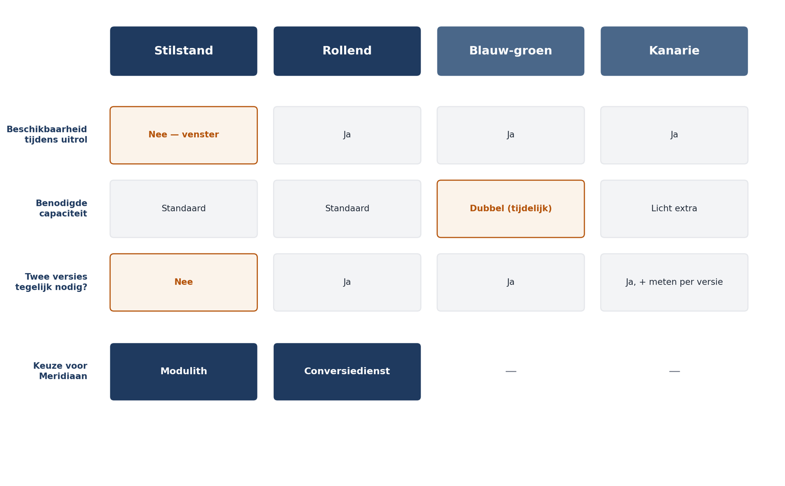

Deel 15 — Cloud-, infrastructuur- en uitrolarchitectuur
Deelnemersreader
Cursus Softwarearchitectuur · Niveau 2 (CPSA-A) · Deel 15 van 28 Competentiegebied: technologisch · twee dagdelen
Positionering
Voorbereiding op het CPSA-Advanced-traject van het iSAQB; deze cursus is geen geaccrediteerde training en levert geen credit points. Raadpleeg isaqb.org voor het actuele modulelandschap. Technologieneutraal — dit deel noemt geen leveranciers of producten, omdat die sneller wijzigen dan de vragen die zij beantwoorden. Waar u productkennis nodig hebt, is dat leverancierstraining, geen architectuur.
Waarom twee dagdelen. Dit deel behandelt vier onderwerpen die in de praktijk onlosmakelijk samenhangen en die elk apart oppervlakkig zouden blijven: waar het draait, hoe het er komt, hoe u weet wat het doet, en wat het kost. Dagdeel A behandelt de eerste twee, dagdeel B de laatste twee.
Leerdoelen
Na dit deel kunt u:
- de architectuurrelevante keuzes bij cloudgebruik onderscheiden van de infrastructuurkeuzes die dat niet zijn;
- de gevolgen van vervangbare, kortlevende uitvoeringsomgevingen voor uw ontwerp benoemen;
- omgevingen, configuratie en geheimen inrichten volgens beproefde uitgangspunten;
- een uitrolstraat ontwerpen met de juiste toetsen op de juiste plaats;
- uitrolstrategieën kiezen en de gevolgen ervan voor uw applicatieontwerp benoemen;
- een waarneembaarheidsconcept opstellen met logging, metrieken en tracering, gericht op vragen in plaats van op volledigheid;
- dienstniveaudoelen formuleren en het foutbudget gebruiken als besluitvormingsinstrument;
- de kostenstructuur van uw architectuur benoemen en kosten als kwaliteitsattribuut behandelen.
Dagdeel A — Waar het draait en hoe het er komt
15.1 De aanleiding: de conversiedienst moet ergens draaien
Uit deel 13 volgde één splitsing: de werkgeversaanlevering en conversie worden een eigen dienst, op grond van isolatie van falen. Dat besluit heeft gevolgen die tot nu toe zijn blijven liggen:
- de dienst moet apart uitgerold kunnen worden, anders levert de splitsing niets op;
- zij moet apart kunnen omvallen zonder de rest mee te nemen — dat was de hele grond;
- zij moet tijdelijk veel meer capaciteit krijgen tijdens de conversie;
- en beheer, dat 's nachts geen bezetting heeft, moet weten wat zij doet.
Daarnaast ligt er een tweede besluit klaar dat niemand nog heeft genomen: Meridiaan draait vandaag op eigen infrastructuur, en de vraag of dit platform naar een clouddienst gaat, staat op de agenda van de IT-directeur.
Dit deel gaat over de architectuurvragen daarachter — niet over de productkeuze.
15.2 Wat aan cloud architectuurrelevant is
De cloudkeuze wordt vaak besproken als een leveranciers- of kostenvraag. Voor de architect zijn drie dingen relevant, en de rest is inkoop.
1. Uw uitvoeringsomgeving is vervangbaar en kortlevend
Dit is de belangrijkste verandering en zij geldt ook zonder cloud, zodra u met containers werkt. De aannames die vervallen:
- “De machine blijft bestaan.” Een uitvoeringsomgeving kan op elk moment worden vervangen. Alles wat u lokaal opslaat — geüploade bestanden, sessies, tijdelijke berekeningen — is weg.
- “Ik weet welke instantie dit afhandelt.” Bij meerdere instanties komt een volgend verzoek elders terecht. Toestand in het geheugen van één instantie werkt niet.
- “Opstarten mag lang duren.” Bij schalen en vervangen is opstarttijd een kwaliteitseigenschap.
Voor Mutatie 2.0 heeft dat concrete gevolgen: geüploade bijlagen gaan naar gedeelde opslag en niet naar de schijf; sessietoestand gaat naar een gedeelde voorziening; en de projectieopbouw uit deel 14 mag niet afhankelijk zijn van één instantie die blijft draaien.
2. Beheerde diensten verplaatsen werk, geen verantwoordelijkheid
Een beheerde database bespaart u patchen, back-ups en failover. Wat u niet bespaart: het ontwerp van uw gegevensmodel, uw herstelprocedure, en uw verantwoordelijkheid richting toezichthouder.
De architectuurvraag is de gebondenheid. Hoe diep bent u verweven met dienstspecifieke eigenschappen, en wat kost het om eruit te komen? Er is geen goed antwoord in het algemeen; er is een bewuste keuze met een prijs.
Voor een pensioenuitvoerder speelt hierbij mee dat uitbesteding onder toezicht aan eisen is gebonden: DNB stelt eisen aan uitbesteding van kritieke processen, waaronder exitstrategieën en toegang tot informatie voor toezicht. Dat maakt de exitvraag geen theoretische maar een verplichte.
3. Elasticiteit is een ontwerpvraag, geen instelling
Automatisch schalen werkt alleen als uw applicatie ertegen kan: geen lokale toestand, snelle opstart, en — het vaakst vergeten — een afhankelijkheid die meeschaalt.
Twintig instanties van de conversiedienst tegen een kernadministratie die twintig aanroepen per seconde aankan, levert twintig keer zoveel wachtrij op en geen enkele versnelling. Schalen zonder de flessenhals mee te nemen, verplaatst het probleem en verbergt het.
↗ EA — De EA-cursus behandelt de cloudkeuze op landschapsniveau als sourcingvraag met leveranciersafhankelijkheid en exitstrategie. Op systeemniveau is de vraag smaller: welke aannames in mijn ontwerp vervallen, en wat kost het om te vertrekken?
15.3 Omgevingen, configuratie en geheimen
Omgevingen. Minimaal ontwikkel, test, acceptatie en productie. De architectuurrelevante eis is dat zij op dezelfde manier tot stand komen — anders test u iets anders dan u uitrolt, en de fouten die u dan vindt, vindt u in productie.
Voor Meridiaan geldt een extra eis die vaak wordt onderschat: productiegegevens horen niet in test. Dat betekent dat testgegevens realistisch genoeg moeten zijn om peildatumgedrag en reglementaire randgevallen te toetsen, zonder persoonsgegevens te bevatten. Dat is ontwerpwerk, geen bijzaak — het cross-cutting concept “testen” uit deel 8 van niveau 1.
Configuratie. Uitgangspunten die zich bewezen hebben:
- Configuratie zit niet in het artefact. Hetzelfde artefact draait in elke omgeving; alleen de configuratie verschilt. Wie per omgeving een eigen bouwsel maakt, test niet wat hij uitrolt.
- Configuratie is versiebeheerd en herleidbaar. Wie wijzigde wat wanneer, en waarom. Dit is dezelfde eis als bij de reglementparameters uit deel 14, en zij wordt om dezelfde reden vergeten.
- Onderscheid technische configuratie van bedrijfsgegevens. De reglementparameters per werkgever zijn geen configuratie maar administratieve gegevens met versiehistorie en een eigenaar bij de administratie.
Dat laatste onderscheid is voor deze casus het belangrijkst en het is precies waar de reconstructieproef op strandde.
Geheimen. Wachtwoorden, sleutels en certificaten horen niet in versiebeheer, niet in configuratiebestanden en niet in logregels. Zij horen in een daarvoor bestemde voorziening, met toegang per rol en met vastlegging van wie wat wanneer opvroeg. Rotatie moet mogelijk zijn zonder uitrol — anders gebeurt het niet.
15.4 De uitrolstraat
Een uitrolstraat is architectuur, geen gereedschapskwestie: zij bepaalt hoe snel u kunt corrigeren, en dat is een kwaliteitseigenschap.
De opeenvolging en wat waar hoort:
| Fase | Wat er gebeurt | Wat er faalt |
|---|---|---|
| Bouwen | Eén artefact, één keer | Compilatiefouten |
| Snelle toetsen | Eenheidstoetsen, statische analyse | Logische fouten in het klein |
| Architectuurtoetsen | Modulegrenzen, afhankelijkheidsrichting, verboden aanroepen | Erosie van uw ontwerp |
| Integratietoetsen | Samenwerking tussen modules, tegen echte opslag | Koppelvlakfouten |
| Uitrol naar acceptatie | Zelfde artefact, andere configuratie | Omgevingsverschillen |
| Toetsen op acceptatie | Scenario’s uit uw meetplan | Kwaliteitseisen |
| Uitrol naar productie | Zelfde artefact | — |
De architectuurtoetsen zijn wat dit tot architectuur maakt. Uit deel 5, 8, 9 en 12 hebt u een reeks regels: modules bezitten hun eigen gegevens, verwijzingen over grenzen gebeuren met identiteiten, het domein leest de klok niet rechtstreeks, correlatie-identificatie wordt meegegeven. Elk van die regels die u niet in de straat toetst, is een regel die van oplettendheid afhangt — en dat is de zwakste borgingslaag uit deel 9.
Het meetplan hoort hier thuis. In deel 6 van niveau 1 legde u per drijverscenario een meetmoment vast. Metingen die alleen handmatig gebeuren, verwateren; de scenario’s die zich lenen voor automatisering horen in de straat, met een drempel die faalt.
De opruimregel. Elke toets die vaak faalt zonder dat iemand iets repareert, wordt genegeerd en daarna uitgezet. Een straat met tien onbetrouwbare toetsen is slechter dan een straat met drie betrouwbare, want het faalsignaal verliest zijn betekenis.
15.5 Uitrolstrategieën
Hoe u nieuwe versies in productie brengt, is een architectuurkeuze omdat het eisen stelt aan uw applicatie.
| Strategie | Werking | Eist van uw applicatie |
|---|---|---|
| Stilstand | Uitzetten, vervangen, aanzetten | Niets — maar wel een venster |
| Rollend | Instanties één voor één vervangen | Twee versies moeten naast elkaar kunnen draaien |
| Blauw-groen | Volledige tweede omgeving, verkeer omschakelen | Idem, plus dubbele capaciteit tijdens de wissel |
| Kanarie | Klein deel van het verkeer naar de nieuwe versie | Idem, plus meten per versie |
De eis die alle strategieën behalve de eerste stellen, is dezelfde en wordt het vaakst gemist: twee versies moeten tegelijk kunnen draaien. Dat heeft twee concrete gevolgen:
Databasewijzigingen moeten achterwaarts compatibel zijn. U voegt eerst een kolom toe, rolt de code uit die hem vult, en verwijdert de oude kolom pas in een latere uitrol. Een migratie die de oude versie breekt, maakt rollende uitrol onmogelijk — en dat merkt u pas tijdens de uitrol.
Gebeurtenisformaten moeten achterwaarts compatibel zijn. Dat is dezelfde eis als bij het versiëren van gebeurtenissen in deel 14, nu tijdens de uitrol: de oude versie leest gebeurtenissen die de nieuwe schrijft.
Voor Meridiaan. De modulith kan met een kort stilstandvenster buiten kantooruren — dat is eenvoudig en past bij twee tot drie teams. De conversiedienst kan rollend, want zij is afgesplitst en heeft geen interactieve gebruikers. Verschillende strategieën per dienst is normaal, en de keuze volgt uit de beschikbaarheidseis, niet uit een voorkeur.
Terugdraaien. Elke strategie heeft een terugweg nodig, en de belangrijkste vraag is hoe u omgaat met gegevens die de nieuwe versie al heeft geschreven. Terugdraaien van code is eenvoudig; terugdraaien van gegevenswijzigingen is dat zelden. Wie dat niet vooraf heeft doordacht, ontdekt tijdens een storing dat terugdraaien geen optie is.

Dagdeel B — Weten wat het doet, en wat het kost
15.6 Waarneembaarheid
Uit bevinding B7 van niveau 1: een storing was niet over servicegrenzen heen te volgen. Met een afgesplitste dienst en asynchrone verwerking is dat probleem terug — en groter.
Waarneembaarheid is niet hetzelfde als bewaking. Bewaking beantwoordt vragen die u vooraf hebt bedacht (“staat de dienst aan?”). Waarneembaarheid stelt u in staat vragen te beantwoorden die u niet had bedacht — en dat is wat u nodig hebt bij een storing, want de storingen die u had voorzien, hebt u al voorkomen.
De drie soorten gegevens
Logging — gebeurtenissen met context. Wat, wanneer, voor wie, met welk resultaat, en de correlatie-identificatie uit deel 8.
Metrieken — getallen over de tijd: aantallen, doorlooptijden, wachtrijlengtes. Goedkoop, samen te vatten, en geschikt voor drempels.
Tracering — het pad van één opdracht door het systeem, met de tijd per stap. Onmisbaar zodra er een netwerkgrens of asynchrone verwerking is.
Voor Mutatie 2.0 zijn dit de metrieken die er werkelijk toe doen, en het is een korte lijst:
| Metriek | Waarom |
|---|---|
| Doorlooptijd bevestiging (p95, p99,5) | QS-1 rechtstreeks |
| Aantal mutaties in de outbox-wachtrij, en de oudste | QS-2; stille stilstand |
| Achterstand per projectie | Deel 14; een stilstaande projectie meldt niets |
| Aantal vastgelopen doorgiftes | QS-2 |
| Batchdoorlooptijd en uitvalpercentage | QS-6 |
| Aanroepen per seconde richting kernadministratie | De limiet uit deel 2 |
Twee van deze zes meten iets dat níét gebeurt, en dat is de belangrijkste les van dit onderdeel. Uit deel 6 van niveau 1: stille stilstand is de moeilijkst ontdekbare storing. Bewaking op fouten vindt hem nooit; bewaking op uitblijvende voortgang wel.
Wat u niet doet
Alles verzamelen. De verleiding is groot en de gevolgen zijn kosten, ruis en een AVG-risico. De vraag bij elke gegevensstroom: welke vraag beantwoordt dit, en wie stelt hem? Wat geen antwoord heeft, verzamelt u niet.
Persoonsgegevens loggen. Uit deel 8: geen BSN, geen volledige adressen, en met name geen relatiegegevens uit scheidings- en overlijdensmutaties. Een verwijzing volstaat.
Alarmeren op alles. Een beheerafdeling die 's nachts geen bezetting heeft, kan niet op vijftig signalen reageren. Alarmeer op wat iemand nu moet weten; de rest is een overzicht dat morgen wordt bekeken.
15.7 Dienstniveaudoelen en het foutbudget
Een dienstniveaudoel (SLO) is een expliciete norm voor de betrouwbaarheid van een dienst, gemeten aan wat de gebruiker ervaart. Bijvoorbeeld: 99,5% van de mutatiebevestigingen binnen 2 seconden, gemeten over een kalendermaand.
Dat lijkt op een kwaliteitsscenario uit deel 2, en dat is het ook — met één toevoeging: het wordt continu gemeten en er hangt een consequentie aan.
Het foutbudget is het verschil tussen het doel en honderd procent. Bij 99,5% mag 0,5% van de bevestigingen te traag zijn: bij 100.000 bevestigingen per maand zijn dat er 500.
Dat budget is een besluitvormingsinstrument:
- Is het budget nog ruim, dan kunt u risico nemen: sneller uitrollen, meer wijzigingen tegelijk.
- Is het budget bijna op, dan gaat de aandacht naar stabiliteit en niet naar nieuwe functionaliteit.
Waarom dit werkt. Het maakt de discussie tussen “meer functionaliteit” en “meer stabiliteit” een rekensom in plaats van een meningsverschil. Dat is voor een architect die met een product owner onderhandelt een aanzienlijk sterkere positie dan een beroep op zorgvuldigheid.
Twee waarschuwingen.
Een doel van 100% is geen doel maar een weigering te kiezen. Het is onhaalbaar, en de poging maakt elke wijziging onbetaalbaar duur.
Meet wat de gebruiker ervaart, niet wat uw dienst denkt te doen. Een dienst die intern binnen 200 milliseconden antwoordt terwijl de gebruiker vier seconden wacht, haalt een doel dat niets betekent.
15.8 Kosten als kwaliteitsattribuut
Kosten staan niet in ISO 25010 en het loont ze in een cloudomgeving als kwaliteitsattribuut te behandelen, omdat architectuurkeuzes daar rechtstreeks in maandelijkse bedragen resulteren.
Wat kosten drijft:
- Verwerkingscapaciteit die draait, ook als er niets gebeurt.
- Opslag die groeit — en bij event sourcing groeit die per definitie. Zeven jaar gebeurtenissen van 340.000 deelnemers is een reëel bedrag en het hoort in de afweging uit deel 14.
- Gegevensverkeer, met name tussen zones of regio’s.
- Waarneembaarheidsgegevens — vaak de post die het snelst en onopgemerkt groeit.
De architectuurkeuzes met de grootste kosteneffecten zijn dezelfde die u om andere redenen al hebt gemaakt: fijnmazigheid van diensten (elke dienst heeft een minimumvoetafdruk), synchroon versus asynchroon (wachtende verwerking is betaalde verwerking), en de bewaartermijn van gebeurtenissen en logging.
De regel die u meeneemt: kosten horen als expliciete post in een ADR, net als de andere prijzen die u benoemt. Een architect die de kostenstructuur van zijn eigen keuzes niet kent, laat iemand anders die afweging maken — meestal een half jaar later, onder druk, zonder de context.
Samenvatting
- Aan cloud is drieërlei architectuurrelevant: uw uitvoeringsomgeving is vervangbaar en kortlevend, beheerde diensten verplaatsen werk maar geen verantwoordelijkheid, en elasticiteit is een ontwerpvraag. De rest is inkoop.
- Schalen zonder de flessenhals mee te nemen, verplaatst het probleem: twintig instanties tegen een limiet van twintig aanroepen per seconde geeft twintig keer zoveel wachtrij.
- Omgevingen komen op dezelfde manier tot stand; configuratie zit niet in het artefact en is versiebeheerd; geheimen zitten in een eigen voorziening met rotatie zonder uitrol.
- Onderscheid technische configuratie van bedrijfsgegevens. De reglementparameters zijn het tweede en zijn precies waar de reconstructieproef op strandde.
- De uitrolstraat is architectuur omdat zij bepaalt hoe snel u kunt corrigeren. Elke ontwerpregel die u er niet in toetst, hangt van oplettendheid af.
- Elke uitrolstrategie behalve stilstand eist dat twee versies naast elkaar draaien: achterwaarts compatibele databasewijzigingen en gebeurtenisformaten.
- Terugdraaien van code is eenvoudig; terugdraaien van gegevenswijzigingen zelden. Denk het vooraf door.
- Waarneembaarheid beantwoordt vragen die u niet had bedacht; bewaking alleen de vragen die u wel had. Twee van de zes kernmetrieken meten iets dat níét gebeurt.
- Een dienstniveaudoel met foutbudget maakt de afweging tussen functionaliteit en stabiliteit een rekensom in plaats van een meningsverschil. Een doel van 100% is een weigering te kiezen.
- Kosten zijn in een cloudomgeving een kwaliteitsattribuut en horen als expliciete post in een ADR.
Kernbegrippen
Vervangbare uitvoeringsomgeving — een omgeving die op elk moment kan worden vervangen; lokale toestand gaat verloren.
Beheerde dienst — een dienst waarvan de leverancier het beheer uitvoert; verplaatst werk, niet verantwoordelijkheid.
Uitrolstraat — de geautomatiseerde reeks van bouwen, toetsen en uitrollen.
Architectuurtoets — een geautomatiseerde controle op ontwerpregels, uitgevoerd in de uitrolstraat.
Rollende / blauw-groene / kanarie-uitrol — strategieën die alle vereisen dat twee versies naast elkaar kunnen draaien.
Waarneembaarheid — het vermogen vragen te beantwoorden die vooraf niet bedacht waren, op basis van logging, metrieken en tracering.
Dienstniveaudoel (SLO) — expliciete, continu gemeten betrouwbaarheidsnorm vanuit gebruikersperspectief.
Foutbudget — het toegestane verschil tussen het doel en volledige betrouwbaarheid; instrument voor besluitvorming.
Verder lezen
- Kim, Humble e.a., The DevOps Handbook — over uitrolstraten en werkstromen.
- Humble & Farley, Continuous Delivery — de klassieke bron; het hoofdstuk over databasemigraties is nog steeds het beste dat er is.
- Beyer e.a., Site Reliability Engineering — de hoofdstukken over SLO’s en foutbudgetten; lees ze kritisch, want de context is een organisatie van andere schaal.
- Majors, Fong-Jones & Miranda, Observability Engineering — over het verschil tussen bewaking en waarneembaarheid.
- Nygard, Release It! — over wat er in productie werkelijk misgaat.
Ductus B.V. · Cursus Softwarearchitectuur · Niveau 2, deel 15 · Deelnemersreader